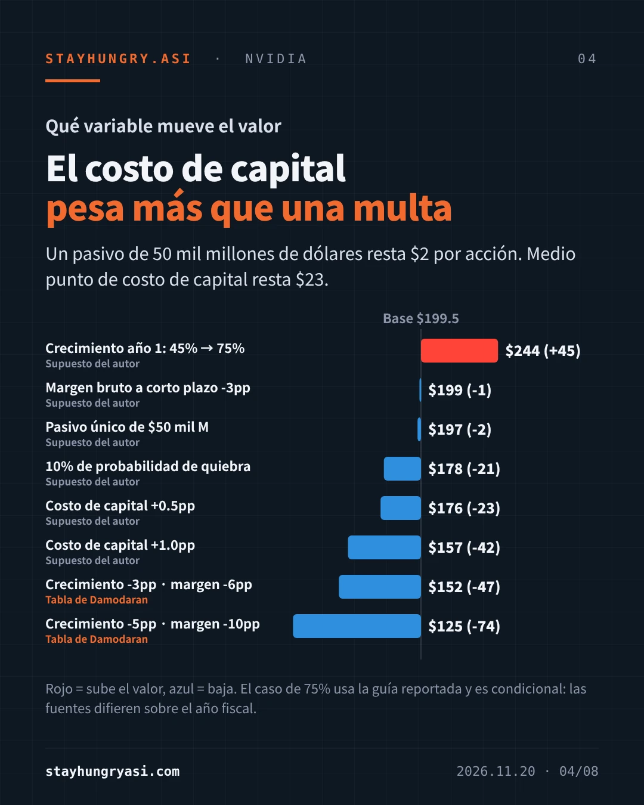
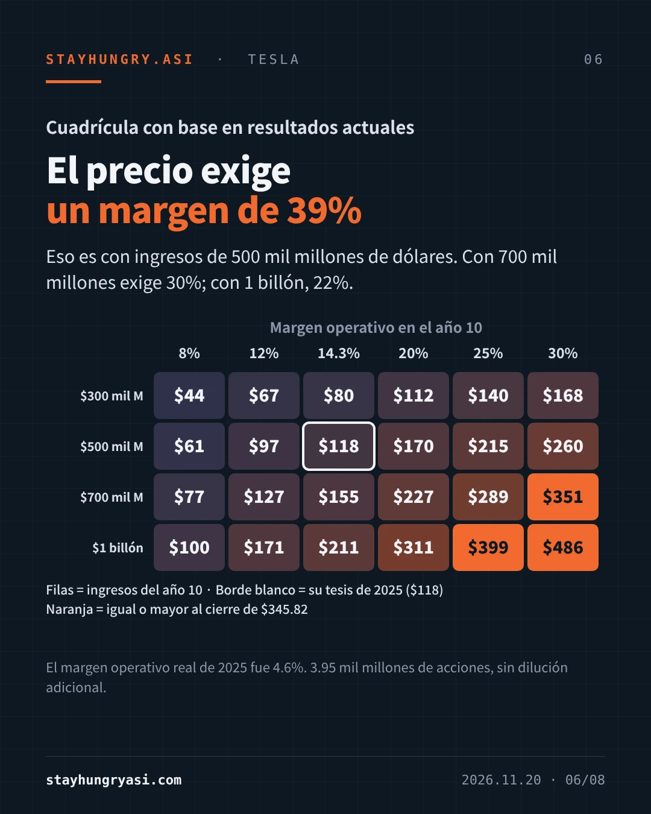

Datos al cierre de EE. UU. del 20 de noviembre de 2026 · stayhungryasi.com
Notación: los valores reproducidos y la tabla de equilibrio de Nvidia son cifras publicadas por el profesor Aswath Damodaran. Las bandas y los escenarios son cálculos del autor a partir de una reconstrucción de sus modelos. No son rangos que él haya publicado. Lo que no se pudo confirmar se marca como «no verificado». No es asesoría de inversión.
Los puntos clave en 8 tarjetas. Toque una imagen para ampliarla.
| Acción | Su valor | Banda recalculada | Caso optimista | Cierre del 20 de noviembre | Posición |
|---|---|---|---|---|---|
| Nvidia | $199.49 | $132~$190 | ~$244 | $125.53 | 5% bajo el piso |
| SpaceX | $97.83 | $84~$111 | $128~$157 | $127.79 | 15% sobre el techo |
| Tesla | $148.23 | $75~$140 | $190~$290 | $345.82 | 20% sobre el techo optimista |
No se pudieron descargar las hojas de cálculo. Los supuestos y los flujos a 10 años se copiaron del cuadro de valoración de cada artículo y se reconstruyó un modelo con la misma estructura.
| Modelo | Su valor por acción | Reproducido | Diferencia |
|---|---|---|---|
| Nvidia (artículo del 2026-11-19) | $199.49 | $199.54 | +0.03% |
| SpaceX (artículo del 2026-06-04) | $97.83 | $97.86 | +0.04% |
| Tesla (artículo del 2025-03-15) | $148.23 | $148.18 | -0.03% |
También se verificaron las 36 celdas de la tabla de equilibrio del artículo de Nvidia; la diferencia máxima es 0.005pp. La verificación confirmó además que la «caída del crecimiento» de su tabla reduce el crecimiento de los años 2–5 y hace descender los años 6–10 desde ese nivel.
Sus supuestos: ingresos base de 303 mil millones de dólares, crecimiento de 45% en el año 1 y 20% en los años 2–5, margen operativo objetivo de 50% (66.5% hoy) y costo de capital de 9.79% a 9.00%. Se restan como deuda compromisos por unos 500 mil millones de dólares. El valor por acción es $199.49.
| Escenario | Valor por acción | Tipo |
|---|---|---|
| Su caso base | $199.49 | Cifra de Damodaran |
| Crecimiento -2pp, margen -4pp | $167 | Cifra de Damodaran |
| Crecimiento -3pp, margen -6pp | $152 | Cifra de Damodaran |
| Crecimiento -4pp, margen -8pp | $138 | Cifra de Damodaran |
| Crecimiento -5pp, margen -10pp | $125 | Cifra de Damodaran |
| Costo de capital +0.5pp | $176 | Supuesto del autor |
| Costo de capital +1.0pp | $157 | Supuesto del autor |
| 10% de probabilidad de quiebra | $178 | Supuesto del autor |
| Pasivo único de 50 mil millones de dólares | $197 | Supuesto del autor |
| Crecimiento -3pp, margen -6pp, costo de capital +0.5pp, pasivo de 50 mil millones de dólares | $132 | Supuesto del autor |
| Crecimiento de 75% en el año 1 (guía reportada) | $244 | Supuesto del autor |
Sus supuestos: ingresos base de 18.7 mil millones de dólares, ingresos de 420 mil millones de dólares en el año 10, margen operativo de 38.1% en el año 10 y costo de capital de 8.37% a 8.25%. El valor por acción es $97.83.
| Escenario | Valor por acción | Tipo |
|---|---|---|
| Su caso base (junio) | $97.83 | Cifra de Damodaran |
| Actualizado: 13.58 mil millones de acciones, 86 mil millones de dólares de la OPI y 32 mil millones de dólares de deuda | $97 | Supuesto del autor |
| Costo de capital +0.5pp | $84 | Supuesto del autor |
| Costo de capital +1.0pp | $74 | Supuesto del autor |
| Ingresos adelantados (169 mil millones de dólares en 2027), mismo estado final | $101 | Supuesto del autor |
| Igual, con capital 1:1 sobre los ingresos nuevos | $89 | Supuesto del autor |
| Ingresos finales x1.5 (630 mil millones de dólares), su eficiencia de capital | $128 | Supuesto del autor |
| Ingresos finales x1.5, capital 1:1 | $111 | Supuesto del autor |
| Ingresos finales x1.5, capital 1:1, costo de capital +0.5pp | $94 | Supuesto del autor |
| Ingresos finales x2 (840 mil millones de dólares), capital 1:1 | $134 | Supuesto del autor |
| Ingresos finales x2, su eficiencia de capital | $157 | Supuesto del autor |
Sus supuestos de 2025: ingresos de 500 mil millones de dólares en el año 10, margen operativo de 14.3% en el año 10 y costo de capital de 9.37% a 8.35%. El valor por acción es $148.23. Proyectó para 2025 ingresos de 128.9 mil millones de dólares con margen de 13.2%; el resultado real fue 94.8 mil millones de dólares con 4.6%.
Valor por acción recalculado desde el punto de partida actual (ingresos de unos 103 mil millones de dólares, margen de 4.6%, 3.95 mil millones de acciones); supuestos del autor.
| Ingresos año 10 \ margen | 8% | 12% | 14.3% | 20% | 25% | 30% |
|---|---|---|---|---|---|---|
| 300 mil millones de dólares | $44 | $67 | $80 | $112 | $140 | $168 |
| 500 mil millones de dólares | $61 | $97 | $118 | $170 | $215 | $260 |
| 700 mil millones de dólares | $77 | $127 | $155 | $227 | $289 | $351 |
| 1 billón de dólares | $100 | $171 | $211 | $311 | $399 | $486 |
| Empresa | Año | Su valor | Precio entonces | Veredicto |
|---|---|---|---|---|
| 2012 | unos $27 por acción | OPI a $38 | Acertó a corto plazo, bajo a largo plazo | |
| Uber | 2014 | 5.9 mil millones de dólares | 17 mil millones de dólares en privado | Muy bajo |
| Airbnb | 2020 | unos $54 por acción | $144.71 al cierre del primer día | Bajo |
| Zomato | 2021 | ₹41 por acción | ₹297.85 en septiembre de 2024 | Bajo (él lo reconoció) |
| Paytm | 2021 | ₹2,000 | ₹713 en julio de 2022 | Alto |
| Nvidia | 2023 | unos $24 (ajustado por split) | unos $40.90 | Vendió pronto |
Sus valoraciones han quedado en general bajas en empresas de crecimiento. No existe un recuento independiente de sus aciertos (no verificado).